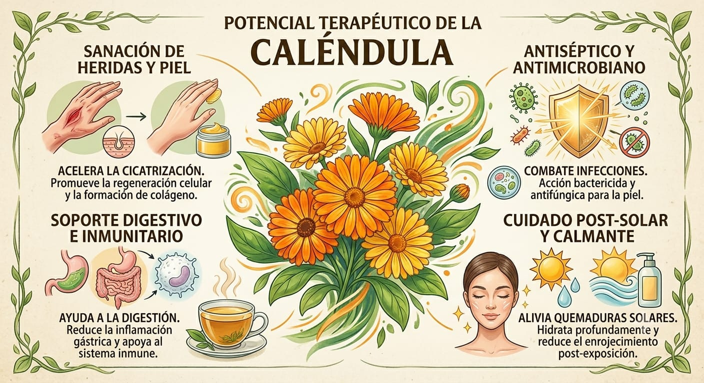

Planta medicinal y ornamental
La caléndula (Calendula officinalis) es una planta herbácea muy conocida por sus flores de color amarillo y naranja. Se cultiva en jardines de muchas partes del mundo debido a su belleza y a sus múltiples usos medicinales. Desde hace siglos ha sido utilizada en remedios naturales, productos cosméticos y tratamientos para el cuidado de la piel.
| Característica | Descripción |
|---|---|
| Nombre científico | Calendula officinalis |
| Familia | Asteraceae |
| Color | Amarillo y naranja |
| Origen | Región Mediterránea |
| Usos | Medicinal, cosmético y ornamental |
La caléndula necesita abundante luz solar y un suelo bien drenado. Debe regarse regularmente evitando el exceso de agua. Es una planta resistente y fácil de cultivar tanto en jardines como en macetas.
Además de sus propiedades medicinales, la caléndula es importante porque atrae insectos polinizadores como las abejas y mariposas, ayudando al equilibrio de los ecosistemas. También es una de las plantas más utilizadas en la elaboración de productos naturales.
